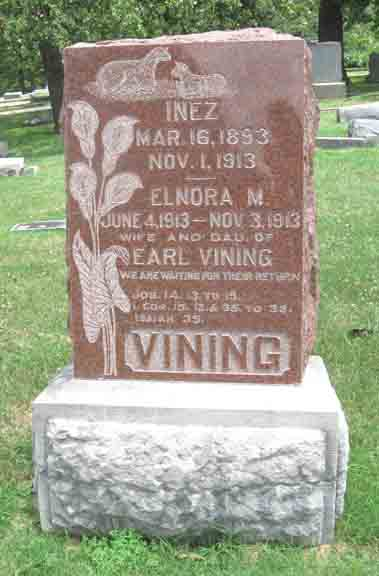

Census Data
| 1920 | 1930 | |
| Earl Vining | 33 | dead |
| Inez (Foster) Vining | dead | |
| Donna Gertrude Vining | [living? in separate household] | |
| Elnora M. Vining | dead | |
| Frankie Earlene Vining | [living? in separate household] |

Death Data
Headstone for Inez (Foster) Vining and daughter Elnora M. Vining, in Neodesha City Cemetery, Neodesha, Wilson County, Kansas (from Find A Grave):